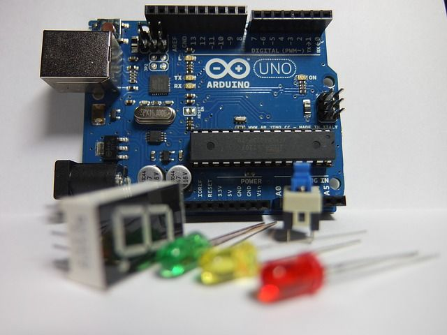
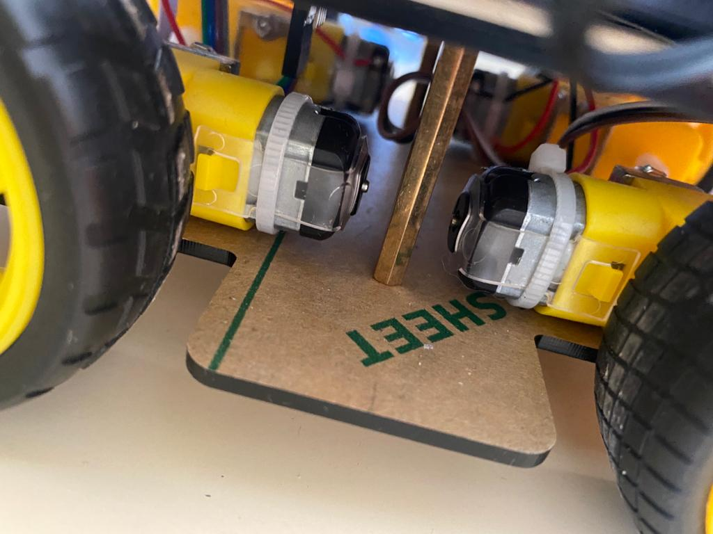
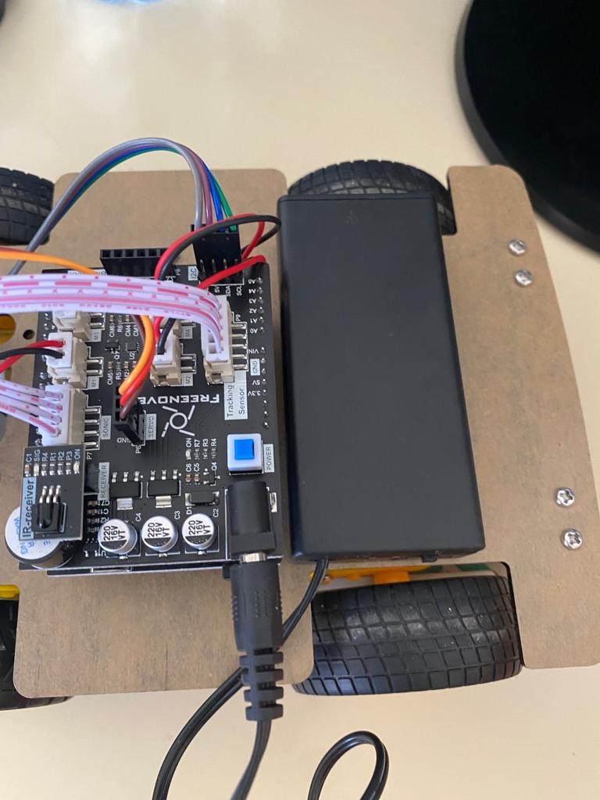
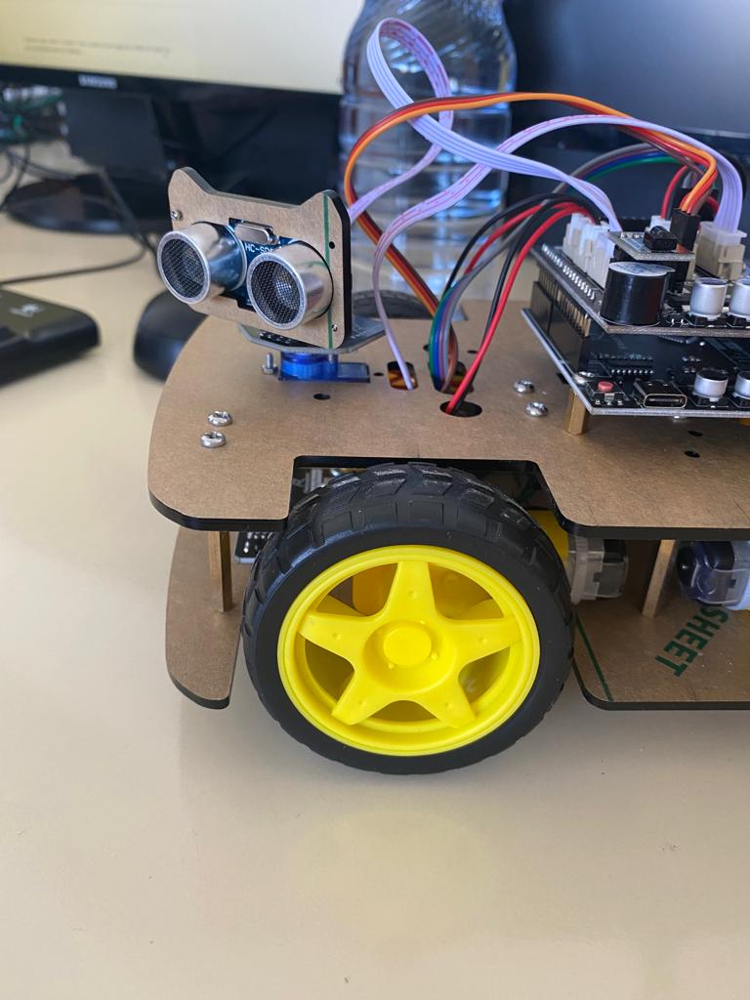
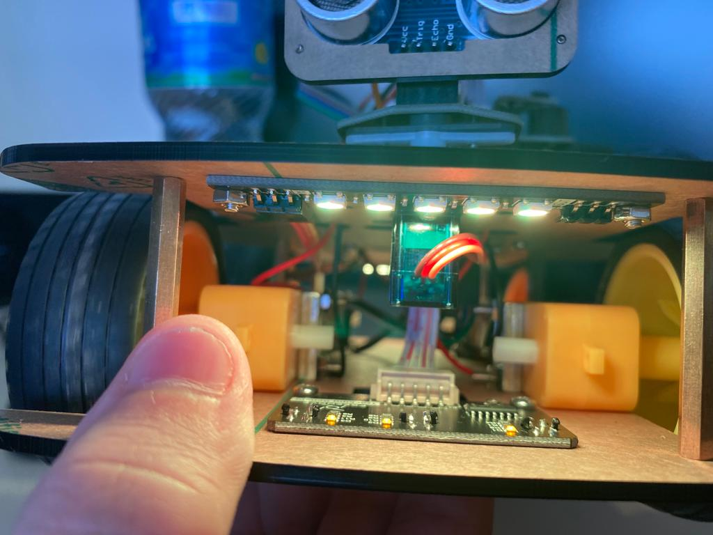

Montaje

Creación del robot

* Lo primero que tenemos que hacer es colocar los motores del coche junto a las ruedas y soldar los cables al motor.

* Una vez hemos colocado bien los motores, es hora de colocar los cables en sus pertos correspondientes.

* Colocamos el sensor ultrasonidos para que nuestro robot pueda esquivar los obstaculos.

* Por ultimo, vamos añadir unos leds para asi decorar nuestro robot y quede mas bonito esteticamente.
VOLVER